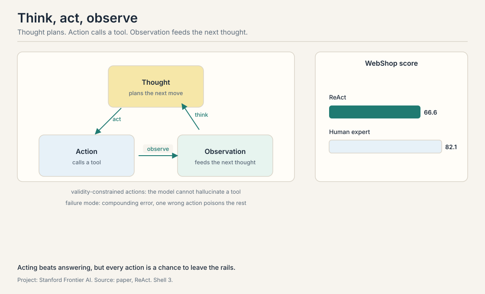
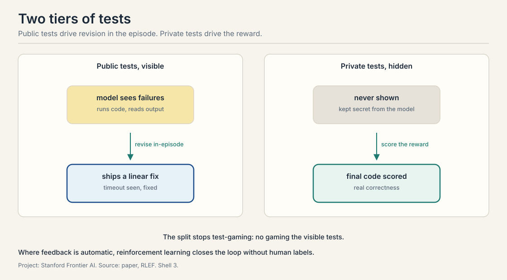

Lecture 3: Learning from Feedback with Tools and Code
Video blocked (ad-blocker or local file mode).
Watch on YouTubeVideo not loading? Watch on YouTube
ReAct for tool use, RLEF for grounding code models in execution feedback, and Constitutional AI for harmlessness without mass human labeling.
Acting beats answering
Builds on: Lecture 1’s agent definition and Lecture 2’s verifiers.
A model that only answers is stuck with what it knows. A model that can act can look things up, run code, and check its work. The shift from answering to acting is the shift from Lecture 1’s chatbot to Lecture 1’s agent. This lecture studies three ways to make action work: a prompting pattern that interleaves thought and action, reinforcement learning that grounds code in execution feedback, and a method that teaches harmlessness without armies of human labelers.
ReAct: think, act, observe
Builds on: The shift from answering to acting, with the prompting pattern that interleaves thought and action.
ReAct is a thought-action-observation loop: a prompting pattern that interleaves reasoning and acting. The model writes a thought, takes an action, reads the observation the environment returns, and repeats. A thought is a reasoning trace. An action is a tool call, such as a search or a lookup. An observation is what the tool returns.
The lecture walks through the paper’s HotpotQA example. The question asks which film’s director also directed a given movie. The model thinks: I need to find the director. It acts: searches for the film. It observes: the search results. It thinks: now I need the director’s other films. It acts: looks up the director’s page. The observation contains “Front Row”, the answer. In the paper’s second example the model chases the film “Apple Remote” through the same loop. Each action grounds the next thought in facts outside the model’s weights.
The results: on HotpotQA, FEVER, Fact Extraction and VERification, a fact-checking benchmark, and WebShop, ReAct beats reasoning-only and acting-only baselines. WebShop is a shopping task where the agent buys items from instructions. ReAct scores 66.6 percent against a human expert’s 82.1. Two design facts matter. The action space is validity-constrained: the model can only take actions the environment accepts, so it cannot hallucinate a tool. And the failure mode is compounding error: one wrong action poisons the observations that follow, so long chains drift. Acting beats answering, but every action is a chance to leave the rails.

RLEF: grounding code in execution
Builds on: ReAct’s tool use, training the model to use tools well through execution feedback.
ReAct gives the model tools. RLEF, reinforcement learning from execution feedback, teaches the model to use them well for code. The problem: a model can write code that looks right and fails. The fix: train on what the code does when run.
The design has two-tier tests. Public tests are visible to the model during the episode: it writes code, runs the public tests, reads the failures, and revises. Private tests are hidden and used only for the reward: the model’s final code is scored against them. The split stops the model from gaming the visible tests at the expense of real correctness. The lecture’s example is a palindrome check that times out on the public tests: the model sees the timeout, finds the quadratic loop, and ships a linear fix.
The learning algorithm is PPO, proximal policy optimization, a reinforcement learning method that updates the model in small steps so it does not forget what it already knows. The design choice the lecture stresses: a token-level policy paired with a turn-level value. The policy chooses each token of code. The value estimates the worth of the whole turn. One advantage signal, how much better this turn was than expected, trains both. The lecture reports training on CodeContests with a Llama 3.1 model: solve rate rises on a log scale of attempts, the 10-at-K metric climbing as the model learns from execution.

The lecture draws the general lesson. For math and code, the environment gives free, honest feedback: the answer is right or wrong, the code runs or crashes. Wherever feedback is automatic, reinforcement learning can close the loop without human labels. Where it is not, the next section shows what replaces the human.
Constitutional AI: feedback without the crowd
Builds on: RLEF’s execution feedback, asking what replaces the human where execution feedback does not exist.
Constitutional AI asks whether a model can teach itself to be harmless. The method, from Anthropic’s 2022 paper, has two phases.
Phase one: give the model a constitution, a list of principles, 16 in the original paper. The model generates a response to a harmful prompt, then self-critiques: it reads its own response against the constitution, finds the violation, and performs self-revision. The revised pairs become supervised training data. No human wrote the labels. The model did.
Phase two: RLAIF, reinforcement learning from AI feedback. The model compares pairs of responses and a preference model learns which the constitution prefers. Then reinforcement learning steers the model toward preferred responses. The preference model is the RLAIF counterpart of RLHF’s reward model, but its labels come from a model, not from human raters.
The results, reported as Elo scores from human evaluations: the method moved the helpfulness-versus-harmlessness frontier outward. Helpfulness is how well the model serves the user: correct, specific, complete answers. Before, safer meant less helpful. After, the model got safer without getting dumber. Two honest footnotes from the lecture. Post-training, all of this, is about 5 percent of the total compute. The base model’s knowledge comes from pretraining. And unlearning, removing knowledge the model already has, remains an open problem: teaching the model not to say something is easier than making it not know it.
Thought: the question asks about the film Apple Remote, so I need to search for it. Action: search Apple Remote film. Observation: results mention a 2005 documentary. Thought: the question asks for the director’s other work. Action: look up the director. Observation: the director page lists Front Row. Thought: I have the answer. Action: answer Front Row. Each observation grounds the next thought. If the first search had returned nothing, the thought would have pivoted to a different query. At the first action. A bad search query returns irrelevant results, the next thought reasons about the wrong film, and every step after inherits the mistake. The trace has no way to know it went wrong except a later observation that fails to cohere. Longer chains mean more chances to derail.
The model needs feedback during the episode, so some tests must be visible. But if the reward used the same visible tests, the model would optimize for them specifically: pass the known tests, fail the general case. Hidden private tests make the reward measure real correctness. The public tests teach revision. The private tests keep it honest. In spirit, yes, with one twist: the “train” tests are interactive. The model runs them, reads failures, and revises inside the episode. A static split only scores. The two-tier split scores and teaches.
Credit assignment. The policy writes tokens. Some tokens are load-bearing, most are scaffolding. The turn-level value estimates the whole attempt’s worth, and the single advantage signal tells the policy which turns were better than expected. Without it, the model would not know whether the fix came from the loop rewrite or the variable rename. Tokens in code have meaning only in context. Scoring each token in isolation is noisy and expensive. The turn is the natural unit: the code either passes or fails.
It might not fully. The honest answer: the constitution is enforced through the model’s own judgments, so the method’s ceiling is the model’s current moral competence. The paper’s evidence is behavioral: human evaluators rated the outputs as both safer and not less helpful, and the Elo frontier moved outward. Whether the model internalized the principles or learned to perform them is not measured. Adversarial probing: prompts designed to make the safe behavior fail, especially in distribution shifts the constitution never mentions. The lecture flags unlearning as the open problem: the knowledge behind the bad behavior is still in the weights.
Because pretraining teaches what the model knows and post-training teaches how it behaves. A base model that knows everything but answers like a document is useless as an agent. Instruction tuning, RLHF, RLAIF, RLEF: all of them are the final 5 percent that turns a text predictor into something that follows instructions, uses tools, and avoids harm. The payoff is behavioral, not factual. No. The lecture’s later evidence says the opposite: for the hardest problems, bigger pretrained models still win. The 5 percent steers the ship. The 95 percent builds it.
The verifier checks the bought item against the instruction: right product, right price bound, right quantity. WebShop’s 66.6 percent versus the human 82.1 shows the headroom. What breaks: ambiguous instructions the verifier cannot judge, and compounding error, where one bad search poisons the chain. The validity-constrained action space stops hallucinated tools but cannot stop bad reasoning with real tools. Split the feedback: visible checks during the episode, such as price bounds and attribute matches, and a hidden reward on final purchase correctness. The model learns to revise from the visible checks without gaming them.
When the feedback is cheap, fast, and consistent, and the task is well-specified. RLAIF scales to millions of comparisons where human labeling stalls. Execution feedback is better than both when it exists: a compiler does not have opinions. AI feedback is worse when the judgment is genuinely human: taste, values, what counts as helpful. The lecture’s map: use execution where it exists, AI feedback where it scales, humans where judgment is the product. Shared blind spots. The labeler and the learner are the same species of model, so the same weaknesses hide in both. The feedback amplifies what the model already believes. Human labels, for all their cost, are an independent check.
Recap: the whole lesson on one screen
- Act, do not just answer. ReAct loops thought, action, observation. WebShop: 66.6 against a human 82.1.
- Actions compound. One wrong tool call poisons the chain. Validity-constrained actions stop fake tools, not bad reasoning.
- Execution is honest feedback. RLEF trains code models on what runs. Public tests teach revision. Private tests keep the reward honest.
- Credit per turn. Token-level policy, turn-level value, one advantage signal. The unit of learning is the attempt.
- Constitutions replace crowds. Self-critique plus revision makes the training data. RLAIF makes the preference model. The helpfulness-harmlessness frontier moves outward.
- Five percent steers. Post-training is a sliver of compute with outsized behavioral effect. Unlearning stays open.
Used where, as of October 2026
- Claude Code, Codex: Anthropic’s agent guidance defines an agent as an LLM using tools in a loop on environmental feedback (Anthropic, December 2024). Codex runs that loop on coding tasks: it writes and edits code, executes commands, runs tests, and inspects files (Wikipedia, October 2026). The ReAct shape, thought, tool call, observation, is the visible loop of these production coding agents.
- RL on verifiable rewards (RLVR): the RLEF idea generalized. DeepSeek-R1’s training used execution-style rewards on math and code, and the recipe spread across labs in 2025.
- Constitutional AI in production: Anthropic rewrote Claude’s constitution in January 2026 (reported September 2026), and the constitutional training methodology remains the documented basis of Claude’s alignment (Anthropic, 2022). The RLAIF pattern, models writing the preference labels, is now the standard hybrid: most production systems combine RLAIF for scale with RLHF for quality validation.
- WebShop-style evaluation: the tool-use benchmark lineage continues in tau-bench (Sierra, June 2024), tau-2-bench (2025), and tau-3-bench (March 2026), all listed as current tool-use agent benchmarks (Wikipedia, October 2026).
Official sources and further reading
Official: - CS329A Part 4: Learning from Feedback with Tools and Code (Autumn 2025). https://www.youtube.com/watch?v=Lxh9RF5S-K0
Further reading: - Yao et al., “ReAct” (2022). https://arxiv.org/abs/2210.03629 - Gehring et al., “RLEF” (ICML 2025). https://arxiv.org/abs/2410.02089 - Bai et al., “Constitutional AI” (2022). https://arxiv.org/abs/2212.08073
Caveats from these sources. The ReAct numbers are from the 2022 paper’s benchmarks. The RLEF results are as reported in the lecture from the ICML 2025 paper. The 5 percent post-training figure is the lecture’s estimate of compute share.
Connections to the other courses
- CS329Z: the builder’s view of tool use: function calling, agent loops, and how ReAct is implemented in practice. This lecture adds the learning theory on top.
- CS329H: preference models, reward models, and the RLHF machinery that Constitutional AI’s RLAIF mirrors.
- CS336: pretraining versus post-training: where the 95 percent goes and why the last 5 percent has outsized behavioral effect.
Sources
- LECTURECS329A Part 4: Learning from Feedback with Tools and Code (Autumn 2025, published 2026-08)
- PAPERYao et al., ReAct: Synergizing Reasoning and Acting in Language Models (2022)
- PAPERGehring et al., RLEF: Grounding Code LLMs in Execution Feedback with Reinforcement Learning (ICML 2025)
- PAPERBai et al., Constitutional AI: Harmlessness from AI Feedback (2022)